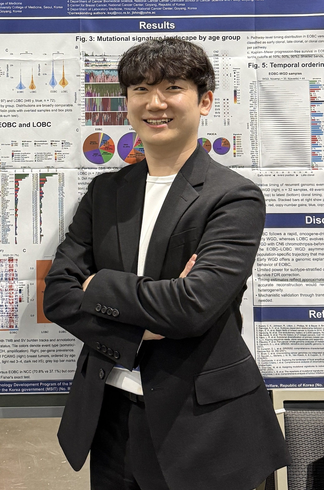

PhD Student · Bioinformatics & Cancer Genomics
Studying cancer evolution through patient genomic data.
Sejung (이세중) Lee is a researcher at Yonsei University interested in cancer evolution, tumor genomics, omics data integration, and determinants of therapeutic response.

I use large-scale omics data to understand tumor progression, structural alterations, driver mutations, and drug response mechanisms.
Profile snapshot
A concise overview of my current academic position, research direction, technical toolkit, and professional activity.
01
Yonsei University
PhD student based in Seoul, Republic of Korea, working in bioinformatics and cancer genomics.
02Cancer evolution
Research focus on driver mutations, structural variation, and patient-derived genomic data.
03Omics analysis
Experience across WGS, transcriptomics, ELISA, Western blot, and immunological assays.
Key focus areas
Main interests connect computational cancer research with experimental background and translational questions.
Public profile